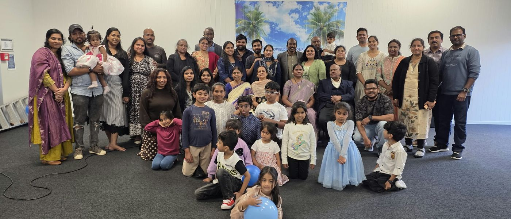
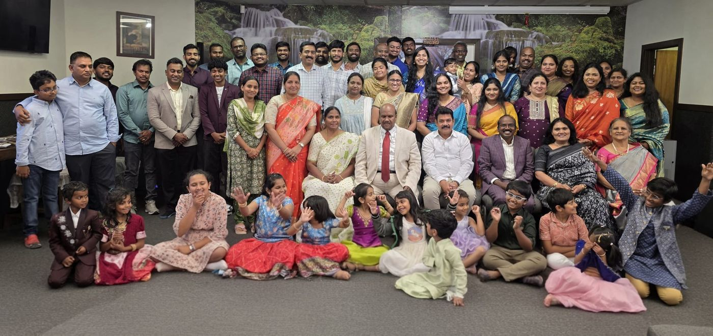
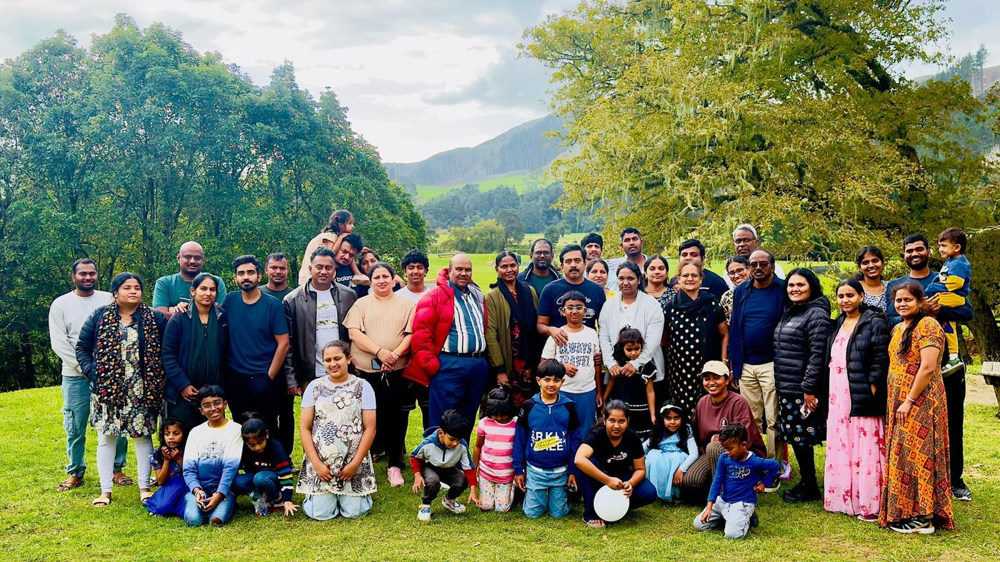

Sunday school
Children go to Sunday school after the first sermon each Sunday.
Sunday school →Join us on Sundays at 10:30am. Everyone is welcome.
13 Favona Road, Mangere, Auckland
Plan your visit


…The LORD thy God is with thee whithersoever thou goest.
…The LORD, he it is that doth go before thee.
…The Lamb … shall lead them unto living fountains of waters.
Worship, the Word, and time together as a church family.
10:30am–1:30pm
Sunday service and fellowship
13 Favona Road, Mangere, Auckland
We are a Christian fellowship in Mangere, Auckland, united by our faith in Jesus Christ.
We gather to worship, study God’s Word, pray, and encourage one another. Everyone is welcome.
Get to know usChildren go to Sunday school after the first sermon each Sunday.
Sunday school →Join our Bible study, prayer meetings, and monthly fasting prayer.
Bible study and prayer →Discover our youth ministry, women's ministry, and gospel outreach.
Find your community →Every Sunday, 10:30am to 1:30pm
7:30pm to 9:30pm, except the first Friday of the month
First Saturday of the month, 10:30am to 1:00pm
All times are local to Auckland.